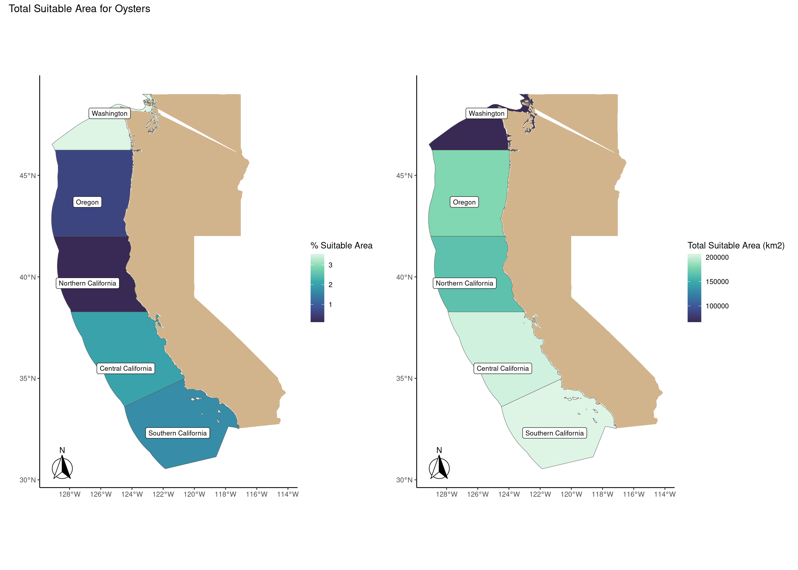
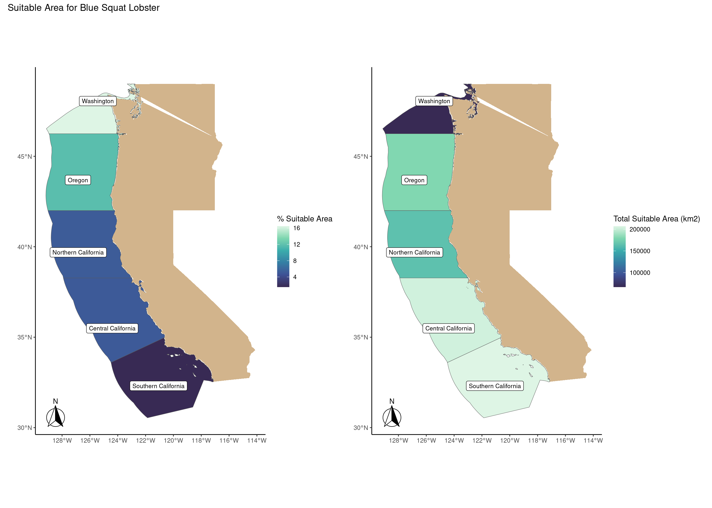

# load libraries
library(tidyverse)
library(here)
library(sf)
library(terra)
library(ggspatial)
library(patchwork)
library(maps)
library(mapdata)Predicting Aquaculture Suitability
Overview
Marine aquaculture has the potential to play an important role in the global food supply as a more sustainable protein option than land-based meat production.1 Gentry et al. mapped the potential for marine aquaculture globally based on multiple constraints, including ship traffic, dissolved oxygen, bottom depth .2
In this project, I am working to determine which Exclusive Economic Zones (EEZ) on the West Coast of the US are best suited to developing marine aquaculture for several species of oysters.
Based on previous research, we know that oysters needs the following conditions for optimal growth:
- sea surface temperature: 11-30°C
- depth: 0-70 meters below sea level
From this analysis, I will also develop a function to determine which Exclusive Economic Zones (EEZ) on the West Coast of the US are best suited for other aquaculture species based on their temperature and depth ranges.
Steps of Analysis:
- combining vector/raster data
- resampling raster data
- masking raster data
- map data
- generalize to a reusable function
Data
Sea Surface Temperature
We will use average annual sea surface temperature (SST) from the years 2008 to 2012 to characterize the average sea surface temperature within the region. The data we are working with was originally generated from NOAA’s 5km Daily Global Satellite Sea Surface Temperature Anomaly v3.1.
Bathymetry
To characterize the depth of the ocean we will use the General Bathymetric Chart of the Oceans (GEBCO).3
Exclusive Economic Zones
We will be designating maritime boundaries using Exclusive Economic Zones off of the west coast of US from Marineregions.org.
Prepare data
To start, we need to load all necessary data and make sure they have matching coordinate reference systems.
# read in shapefiles
eez <- read_sf(here("data", "wc_regions_clean.shp"))
# read in SST rasters
sst_2008 <- rast(here("data", "average_annual_sst_2008.tif"))
sst_2009 <- rast(here("data", "average_annual_sst_2009.tif"))
sst_2010 <- rast(here("data", "average_annual_sst_2010.tif"))
sst_2011 <- rast(here("data", "average_annual_sst_2011.tif"))
sst_2012 <- rast(here("data", "average_annual_sst_2012.tif"))
# combining the sst data
sst <- list(sst_2008, sst_2009, sst_2010, sst_2011, sst_2012)
sst_rast <- rast(sst)
# plotting check
#plot(sst_rast)
# read in bathymetry raster
depth <- rast(here("data", "depth.tif"))
# plotting check
#plot(depth)
# getting base map for the US/west coast
state <- map_data('state')
westcoast <- subset(state, region %in% c("washington", "oregon", "california"))# check crs of all data
#st_crs(wc) # 4326
#st_crs(sst_rast) # 9122
#st_crs(depth) # 4326
# reproject sst_rast to have same crs as the others
sst_rast <- project(sst_rast, "EPSG:4326")
# check to see that the crs matches
# st_crs(sst_rast) == st_crs(depth)Process data
Next, we need process the SST and depth data so that they can be combined. In this case the SST and depth data have slightly different resolutions, extents, and positions. We don’t want to change the underlying depth data, so we will need to resample to match the SST data using the nearest neighbor approach.
# mean sst from 2008-2012
sst_mean <- mean(sst_rast)
# calculating the mean K to ºC
sst_mean_c <- sst_mean - 273.15
# cropping depth data to sst raster extent
depth_crop <- crop(depth, sst_mean_c)
# matching the resolution of both rasters
depth_crop_res <- resample(x = depth_crop,
y = sst_mean_c,
method = "near")
#checking that the CRS, resolution, and extent match
st_crs(sst_mean_c) == st_crs(depth_crop_res)[1] TRUEres(sst_mean_c) == res(depth_crop_res)[1] TRUE TRUEext(sst_mean_c) == ext(depth_crop_res)[1] TRUE# stacking the two rasters of depth and sea surface temperature
sst_depth_list <- list(sst_mean_c, depth_crop_res)
sst_depth_rast <- rast(sst_depth_list)
# plotting new raster
# plot(sst_depth_rast)Find suitable locations
In order to find suitable locations for marine aquaculture, we’ll need to find locations that are suitable in terms of both SST and depth.
# creating a reclassification matrix valid sst locations
sst_reclass <- matrix(c(-Inf, 11, NA,
11, 30, 1,
30, Inf, NA),
ncol = 3,
byrow = TRUE)
# using the reclassifying matrix to set non-suitable sst to NA
sst_suitable <- classify(sst_mean_c, rcl = sst_reclass)
# creating a reclassification matrix valid depth locations
depth_reclass <- matrix(c(-Inf, -70, NA,
-70, 0, 1,
0, Inf, NA),
ncol = 3,
byrow = TRUE)
# using the reclassifying matrix to set non-suitable depth to NA
depth_suitable <- classify(depth_crop_res, rcl = depth_reclass)
# cropping sst and depth data based on the mask
sst_oyster <- mask(sst_mean_c, sst_suitable)
depth_oyster <- mask(depth_crop_res, depth_suitable)
# combining the two rasters
list_oyster <- list(depth_suitable, sst_suitable)
sst_depth_oyster <- rast(list_oyster)
# overlaying the data
fun_oyster <- function(x, y){
return(x * y)
}
sst_depth_suitable <- lapp(sst_depth_oyster,
fun = fun_oyster)
# check by plotting
#plot(sst_depth_suitable)Determine the most suitable EEZ
We want to determine the total suitable area within each EEZ in order to rank zones by priority. To do so, we need to find the total area of suitable locations within each EEZ.
#mask cell size for suitable areas
mask_suitable <- cellSize(sst_depth_suitable,
mask = TRUE,
unit = 'km',
transform = T)
#rasterize wc region
wc_rasterized <- rasterize(eez, sst_depth_suitable, field = 'rgn')
#total suitable area
total_suitable_area <- zonal(mask_suitable, wc_rasterized,
fun = 'sum',
na.rm = TRUE)
#percent suitable area
percentage_suitable_area <- left_join(eez, total_suitable_area, by = 'rgn') %>%
mutate(percent_suitable_area = (area / area_km2) * 100)
# report in a table
percentage_suitable_area %>%
st_drop_geometry() %>%
select(Region = rgn,
`Total Suitable Area` = area_km2,
`Percent Suitable Area` = percent_suitable_area)# A tibble: 5 × 3
Region `Total Suitable Area` `Percent Suitable Area`
<chr> <dbl> <dbl>
1 Oregon 179994. 0.597
2 Northern California 164379. 0.108
3 Central California 202738. 2.01
4 Southern California 206861. 1.70
5 Washington 66898. 3.56 Plotting the results
# mapping the data with percent of area as the fill
plot1 <- ggplot() +
geom_sf(data = percentage_suitable_area, aes(fill = percent_suitable_area)) +
geom_polygon(data = westcoast, aes(x = long, y = lat), fill = "tan") +
theme_classic() +
scale_fill_viridis_c(option = "G", begin = 0.2) +
labs(fill = "% Suitable Area", x = "", y = "") +
ggsflabel::geom_sf_label_repel(data = percentage_suitable_area, aes(label = rgn), # label the region by key
seed = 9, # seed so placements are the same
size = 3, fill = "white") + # label size
annotation_north_arrow(location = "bl", # north arrow bottom right
style = ggspatial::north_arrow_fancy_orienteering())
plot2 <- ggplot() +
geom_sf(data = percentage_suitable_area, aes(fill = area_km2)) +
geom_polygon(data = westcoast, aes(x = long, y = lat), fill = "tan") +
theme_classic() +
scale_fill_viridis_c(option = "G", begin = 0.2) +
labs(fill = "Total Suitable Area (km2)", x = "", y = "") +
ggsflabel::geom_sf_label_repel(data = percentage_suitable_area, aes(label = rgn), # label the region by key
seed = 9, # seed so placements are the same
size = 3, fill = "white") + # label size
annotation_north_arrow(location = "bl", # north arrow bottom right
style = ggspatial::north_arrow_fancy_orienteering())
plot1 + plot2 + plot_annotation(title = paste("Total Suitable Area for Oysters")) + plot_layout(widths = 3)
Creating a Re-Usable Function
species_suitability <- function(min_temp, max_temp, min_depth, max_depth, species) {
# Stack the rasters
sst <- list(sst_2008, sst_2009, sst_2010, sst_2011, sst_2012)
sst_rast <- rast(sst)
# transform crs
eez <- st_transform(eez, "EPSG:4326")
sst_rast <- project(sst_rast, "EPSG:4326")
depth <- project(depth, "EPSG:4326")
# find mean and convert to ºC
mean_sst <- mean(sst_rast)
mean_sst <- mean_sst - 273.15
#crop and resample
depth_crop <- crop(depth, mean_sst)
depth_resamp <- resample(x = depth_crop, y = mean_sst, method = "near")
#Reclassify depth raster to = 1 when between -70 and 0
depth_reclass <- matrix(c(-Inf, -max_depth, NA,
-max_depth, -min_depth, 1,
-min_depth, Inf, NA), ncol = 3, byrow = TRUE)
suitable_depth <- classify(depth_resamp, rcl = depth_reclass)
# Reclassify sst raster using funtion input of temps and depths
sst_reclass <- matrix(c(-Inf, min_temp, NA,
min_temp, max_temp, 1,
max_temp, Inf, NA), ncol = 3, byrow = TRUE)
suitable_sst <- classify(mean_sst, rcl = sst_reclass)
# Find suitable locations for both depth and sst
suitable_stack <- c(suitable_depth, suitable_sst)
fun_suitable <- function(x, y) {x*y}
suitable <- lapp(suitable_stack[[c(1, 2)]], fun = fun_suitable)
# mask cell size for suitable areas
mask_suitable <- cellSize(suitable,
mask = TRUE,
unit = 'km',
transform = T)
#rasterize eez
wc_rasterized <- rasterize(eez, suitable, field = 'rgn')
#total suitable area
total_suitable_area <- zonal(mask_suitable, wc_rasterized,
fun = 'sum',
na.rm = TRUE)
#percent suitable area
percent_suitable_area <- left_join(eez, total_suitable_area, by = 'rgn') %>%
mutate(percent_suitable_area = (area / area_km2) * 100)
# table
print(percent_suitable_area %>%
st_drop_geometry() %>%
select(Region = rgn,
`Total Suitable Area` = area_km2,
`Percent Suitable Area` = percent_suitable_area))
# mapping
map_percent <- ggplot() +
geom_sf(data = percent_suitable_area, aes(fill = percent_suitable_area)) +
geom_polygon(data = westcoast, aes(x = long, y = lat), fill = "tan") +
theme_classic() +
scale_fill_viridis_c(option = "G", begin = 0.2) +
labs(fill = "% Suitable Area",
x = "", y = "") +
ggsflabel::geom_sf_label_repel(data = percent_suitable_area, aes(label = rgn), # label the region by key
seed = 9, # seed so placements are the same
size = 3, fill = "white") + # label size
annotation_north_arrow(location = "bl", # north arrow bottom right
style = ggspatial::north_arrow_fancy_orienteering())
map_total <- ggplot() +
geom_sf(data = percent_suitable_area, aes(fill = area_km2)) +
geom_polygon(data = westcoast, aes(x = long, y = lat), fill = "tan") +
theme_classic() +
scale_fill_viridis_c(option = "G", begin = 0.2) +
labs(fill = "Total Suitable Area (km2)",
x = "", y = "") +
ggsflabel::geom_sf_label_repel(data = percent_suitable_area, aes(label = rgn), # label the region by key
seed = 9, # seed so placements are the same
size = 3, fill = "white") + # label size
annotation_north_arrow(location = "bl", # north arrow bottom right
style = ggspatial::north_arrow_fancy_orienteering())
map_percent + map_total + plot_annotation(title = paste("Suitable Area for", species)) + plot_layout(widths = 3)
}Run the function with your aquaculture species of choice
SeaLifeBase is a good resource for finding information on species depth and temperature requirements.
# give the function a try!
species_suitability(min_temp = 10, max_temp = 14,
min_depth = 50, max_depth = 500,
species = "Blue Squat Lobster")# A tibble: 5 × 3
Region `Total Suitable Area` `Percent Suitable Area`
<chr> <dbl> <dbl>
1 Oregon 179994. 11.7
2 Northern California 164379. 5.20
3 Central California 202738. 5.14
4 Southern California 206861. 1.54
5 Washington 66898. 16.4 
Footnotes
Hall, S. J., Delaporte, A., Phillips, M. J., Beveridge, M. & O’Keefe, M. Blue Frontiers: Managing the Environmental Costs of Aquaculture (The WorldFish Center, Penang, Malaysia, 2011).↩︎
Gentry, R. R., Froehlich, H. E., Grimm, D., Kareiva, P., Parke, M., Rust, M., Gaines, S. D., & Halpern, B. S. Mapping the global potential for marine aquaculture. Nature Ecology & Evolution, 1, 1317-1324 (2017).↩︎
GEBCO Compilation Group (2022) GEBCO_2022 Grid (doi:10.5285/e0f0bb80-ab44-2739-e053-6c86abc0289c).↩︎